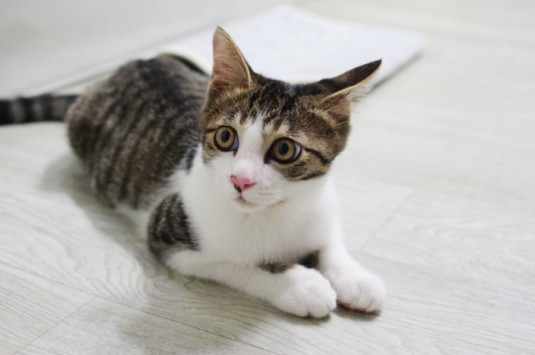
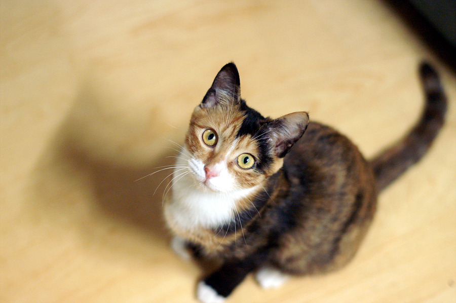
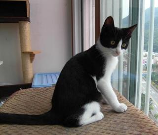

|
♡"고양이를 사랑하는 모임"♡ |
고사모?
나는 고양이 반려인이 될만한 자격이 있냥?
입양전 반려인 자격 자가 TEST 목록-
한 달 평균 13만3000원 지출할 수 있는 경제적 여유가 있냥?
가족구성원 모두가 고양이 입양에 동의하느냥?
본인 소유의 집이 아닌 경우 현재 살고 있는 곳에서 고양이를 키울 수 있냥?
옷,가구,집안 곳곳에 고양이 털이 날려도 괜찮냥?
장모는 하루 한 번, 단모는 일주일에 한번 빗질을 해 줄 수 있는냥?
다양한 종류의 스크래처를 구비해 고양이의 본능을 해소시켜 줄 수 있는냥?
매일 다른 장난감으로 하루 30분 '액티브하게' 놀아줄 수 있는냥?
코리안 숏 헤어
(한국 고양이) 길에서도 흔히 볼 수 있는 한국의 토종 고양이이다 냥
-
고등어태비

등색이 우리가 먹는 고등어가 가지고 있는 무늬와 비슷한 모양을 띄고 있어서 붙여진 이름이다 냥
치즈태비

몸 전체가 치즈색 무늬로 되어 있으며 흰색이 섞여 있는 경우도 있다 냥
삼색이

일본에서 행운을 불러온다는 의미를 가지고 있다 냥 검정색,고동색,하양색이 섞여 있는 털 무늬를 가지고 있어서 삼색이라고 부른다 냥 삼색이는 신기하게도 여자 아이일 가능성이 높다고 한다 냥
턱시도

흰 바탕에 검은 무늬를 가지고 있기때문에 마치 그 모습이 턱시도를 입은 것과 유사하여 턱시도라고 불여진 이름이다 냥
치즈태비 고양이 웃긴 영상
그 중 작성자 집사가 제일 좋아하는 치즈태비 고양이 영상을 가지고 와보았다 냥!